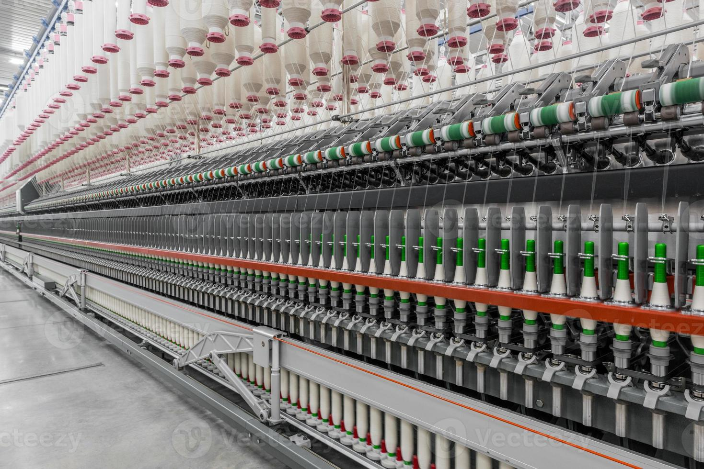

1. üßµ Department of Yarn Engineering (YE)
- Focus: Spinning technology — converting fibers into yarn.
- Topics: Blow room, carding, combing, ring spinning, rotor spinning, yarn testing.
- Industry relevance: Spinning mills.

2. ü™° Department of Fabric Engineering (FE)
- Focus: Fabric formation — weaving and knitting.
- Topics: Loom mechanisms, warp/weft knitting, fabric design, fabric analysis.
- Industry relevance: Weaving and knitting mills.
3. üß∂ Department of Wet Processing Technology (WPT)
- Focus: Textile wet processing — dyeing, printing, finishing.
- Topics: Dyeing techniques, printing methods, finishing processes.
- Industry relevance: Dyeing and finishing mills.
4. üëî Department of Apparel Engineering (AE)
- Focus: Garment manufacturing and fashion technology.
- Topics: Garment design, pattern making, cutting, sewing, merchandising, CAD.
- Industry relevance: Garment factories and fashion houses.
5. üß™ Department of Textile Engineering Management (TEM)
- Focus: Management, marketing, and industrial engineering in textiles.
- Topics: Supply chain, production planning, merchandising, HR, costing.
- Industry relevance: Industrial management, merchandising, and marketing roles.
6. üß´ Department of Dyes and Chemicals Engineering (DCE)
- Focus: Advanced dye and chemical formulation, sustainability in processing.
- Topics: Organic/inorganic dyes, eco-friendly alternatives, textile chemistry.
- Industry relevance: Chemical companies, dyeing factories, labs.
7. üëó Department of Textile Fashion & Design (TFD)
- Focus: Creative design of clothing and textiles.
- Fashion illustration, garment styling, pattern making, draping, textile aesthetics, CAD for fashion.
- Industry Relevance: Fashion houses, garment design studios, trend forecasting, boutique businesses.
8. üõ†Ô∏è Department of Machinery Design & Maintenance (MDM)
- Focus: Design, operation, and maintenance of textile machinery.
- Topics: Machine elements, mechanical systems, automation, maintenance management, design software.
- Industry Relevance: Textile machine manufacturers, mill maintenance departments, machinery R&D
9. üè≠ Department of Industrial & Production Engineering (IPE)
- Focus: Efficiency, productivity, and industrial management in textile and apparel production.
- Topics: Production planning, lean manufacturing, operations research, work study, quality control.
- Industry Relevance: Garment/textile factories, production engineering, IE, and operations optimization.